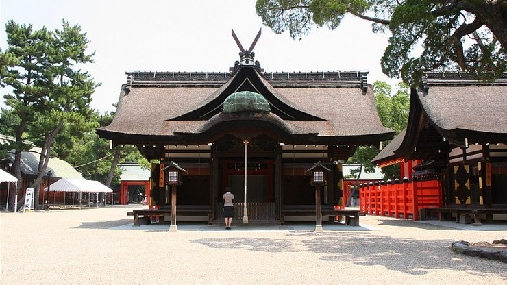
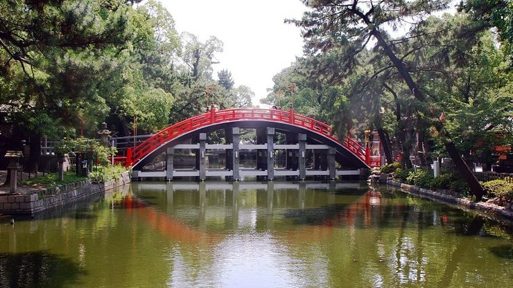

Osaka's Sumiyoshi Taisha (住吉大社, "Sumiyoshi Grand Shrine") is one of Japan's oldest shrines. Founded in the 3rd century before the introduction of Buddhism, it displays a unique style of shrine architecture, called Sumiyoshi-zukuri, that is free of influence from the Asian mainland. Only two other shrine architecture styles are also considered purely Japanese: Shinmei-zukuri as seen at the Ise Shrines and Taisha-zukuri as seen at Izumo Taisha.
Sumiyoshi-zukuri is characterized by straight roofs (as opposed to the curved roofs commonly built in later centuries) which are decorated by two sets of forked finials (chigi) and five horizontal billets (katsuogi). Furthermore, buildings constructed in Sumiyoshi-zukuri style have their entrance under the gable and are surrounded by a fence.
Sumiyoshi Taisha is the main and most famous of over two thousand Sumiyoshi shrines found across Japan. Sumiyoshi shrines enshrine the kami (Shinto gods) who protect travelers, fishermen and sailors at sea. The shrines are therefore usually found close to harbors.
There are four main halls at Osaka's Sumiyoshi Taisha. Interestingly, the first three are positioned in a straight line facing west, while the fourth stands just beside the third. This arrangement of shrine buildings is rarely seen in Japan, as shrines built during and after the Nara Period (710-794) mostly face south, pertaining to Chinese geomancy.
Leading to the entrance of the main shrine grounds is the beautiful Sorihashi Bridge, which creates a uniquely high arch over a pond. During hatsumode (first visit to a shrine on New Year), Sumiyoshi Taisha is one of the most visited shrines in the country.
